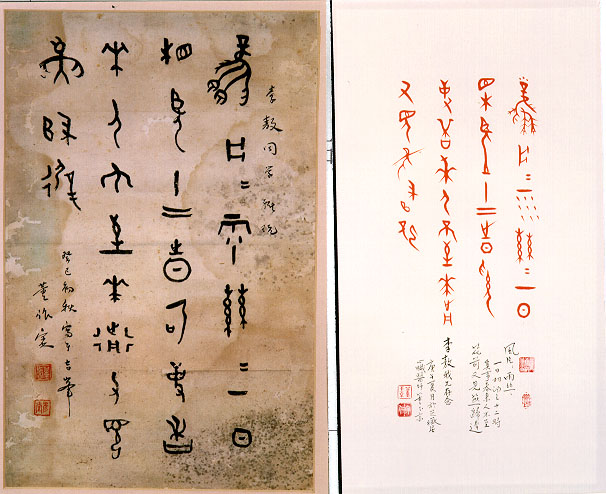

義助慰安婦
—— 李敖百件珍藏義賣藝術品（第94件）
品 名： I7. 董作賓寫甲骨文贈李敖（附董玉京寫甲骨文贈李敖） 預估價： 10 萬 成交價： 18 萬 說 明： 「風片片，雨絲絲，一日相望十二時，奚事春來人不至，花前又見燕歸遲。」清末河南安陽發現許多小骨頭，上面刻了大家都不認識的字，中藥商把它送到中藥鋪磨成粉認為可以治病，後來發現為商朝的甲骨文字。這些刻在烏龜的背殼上或牛骨上的文字，是商朝人先在龜殼上用火燒出紋路，看今天要不要打人？要不要做好事？商朝人非常迷信，所以做什事都要燒烏龜，烏龜非常倒楣。這些卜辭連孔夫子都沒見過，反倒是我們現代人看到了，孔夫子是殷以後的人，當時道些文字都失傳了。
中國有四個人研究甲骨文最為有名，其中一人叫董彥堂也就是董作賓，他是台大考古人類學系教授，後來做了中央研究院歷史語言研究所所長。他在四十年前寫了這段字送給李敖；四十年後他的兒子，著名的心臟科醫師黃玉京醫師，也會寫甲骨文，也寫得很好，寫了相同的一段字送李敖。四十年間父子兩代寫了相同的詞，可以看到這有趣的因緣。甲骨文是象形字，寫起來非常有趣；現在董氏父子工人的作品擺在一起義責，水不分離。
